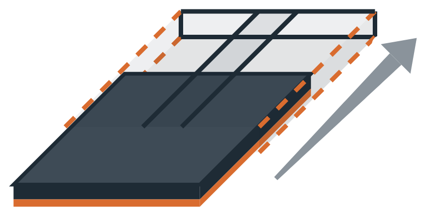

La codification Quadreti
Chaque visuel connaît sa place.
Un code imprimé au dos de chaque visuel, le même que dans l’app. Vous montez, démontez, remontez sans jamais deviner.
Le code au dos
deux repères par visuel
- B2
- le carreausa place sur le mur
- D5
- la tessellesa place dans le carreau
-
Un seul carreaulisez le code orange
-
Plusieurs carreauxle carreau d’abord, puis l’orange
La tesselle porte son code ; le carreau, lui, a un code virtuel, utile dès deux carreaux.
La place dans le carreau
ligne D
colonne 5
D5
chiffres à l’horizontale,
lettres à la verticale
Le carreau sur le mur
colonne B
ligne 2
B2
code virtuel,
si plusieurs carreaux
Imprimez en recto-verso
les fichiers « couleur » et « codification » de l’app
Imprimez à 100 %
Le verso est inversé : une fois la feuille retournée, chaque code tombe derrière son visuel.
Feuille A : colonnes 1 à 4 — feuille B : colonnes 5 à 7.
Une seule feuille prédécoupée de 4 colonnes pour les deux.
Retrouvez la place
pour chaque visuel
-
1Repérez
carreau B2 · place D5
-
2Retournez
face couleur devant
-

3Enfilez l’étui
visuel et tesselle ensemble
-
4Clipsez
dans le carreau B2
Changez à volonté.
Composer mon mur